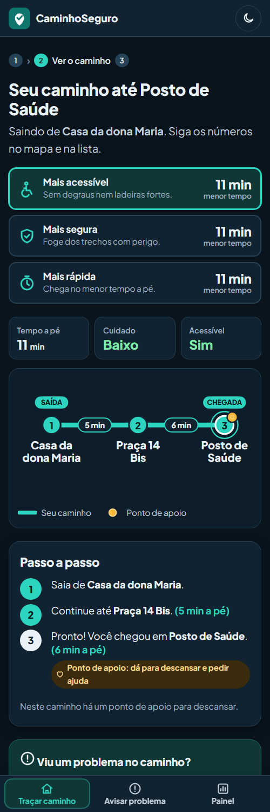

<!doctype html><html lang="pt-BR"><head><meta charset="utf-8"><link rel="stylesheet" href="comum.css"><script src="comum.js"></script></head><body>
<div class="palco" id="p"></div>
<script>
const quem=(n,t,s,y)=>`<div class="card" style="position:absolute;left:960px;top:${y}px;width:850px;height:170px;display:flex;align-items:center;gap:32px;padding:0 40px">
<span style="width:100px;height:100px;border-radius:28px;background:rgba(45,212,191,.15);color:var(--teal);display:flex;align-items:center;justify-content:center;font-size:58px">${ic(n)}</span>
<div><div style="font-size:42px;font-weight:800">${t}</div><div style="font-size:27px;color:var(--ink2);margin-top:4px">${s}</div></div></div>`;
const maria_=`<div style="position:absolute;left:120px;top:150px;width:700px;height:700px;border-radius:50%;background:radial-gradient(circle,#14998c55,transparent 68%)"></div>
<svg width="1920" height="1080" style="position:absolute;inset:0"><g transform="translate(470 830) scale(1.12)">${maria()}</g></svg>`;
let h='<div class="topo"><span class="chip">Para quem</span></div>';
if(V==='a'){
 h+=maria_+`<div style="position:absolute;left:960px;top:230px;width:860px">
 <div style="font-size:44px;font-weight:600;color:var(--ink2)">Foi por ela que criamos</div>
 <div style="display:flex;align-items:center;gap:30px;margin-top:34px">${SHIELD(150)}<div style="font-size:104px;font-weight:800;letter-spacing:-.035em">Caminho<span style="color:var(--teal)">Seguro</span></div></div>
 <div style="margin-top:34px;display:inline-flex"><span class="chip amb" style="font-size:32px">Dona Maria, 72 anos &middot; Bela Vista</span></div></div>`;
}else if(V==='b'){
 h+=maria_.replace('translate(470 830) scale(1.12)','translate(330 830) scale(1.0)')+`
 <div style="position:absolute;left:640px;top:200px;width:560px"><h1 style="font-size:58px">O caminho a pé <em>mais seguro</em> e acessível</h1><div class="sub" style="margin-top:20px;font-size:30px">Mapa, passo a passo e tempo a pé.</div></div>
 <div style="position:absolute;left:1330px;top:70px;width:434px;height:764px;border-radius:64px;background:#05090d;padding:17px;box-shadow:0 0 0 3px #2a4152,0 40px 90px rgba(0,0,0,.6)"><div style="width:400px;height:730px;border-radius:48px;overflow:hidden;position:relative"></div></div>`;
}else{
 h+=maria_+`<div style="position:absolute;left:960px;top:130px;font-size:56px;font-weight:800;letter-spacing:-.02em">Feito para quem mais precisa</div>
 ${quem('pin','Pessoas idosas','Como a dona Maria, que quer andar com tranquilidade',250)}
 ${quem('cadeira','Quem usa cadeira de rodas','Caminhos sem degraus nem ladeiras fortes',460)}
 ${quem('cora','Quem cuida de alguém','Para acompanhar com mais segurança',670)}`;
}
document.getElementById('p').innerHTML=h;
</script></body></html>
